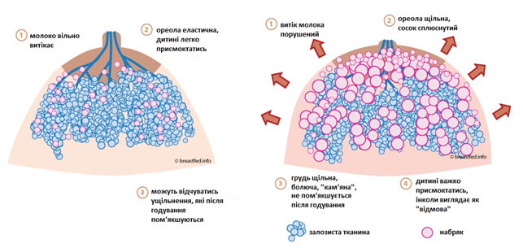
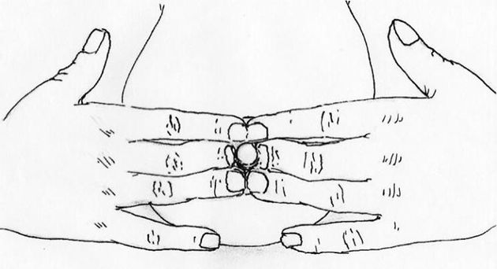
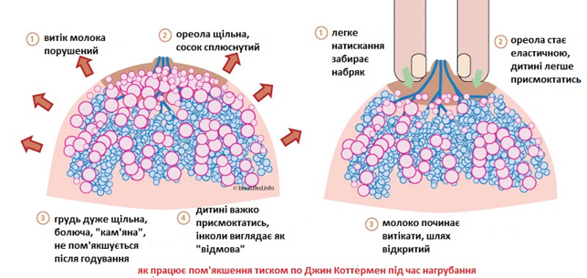
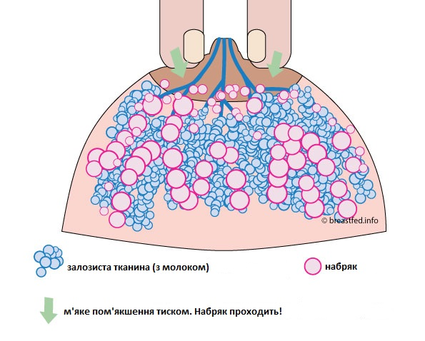
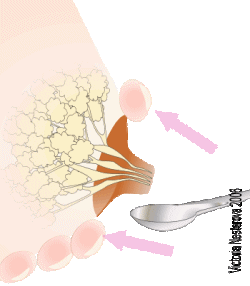
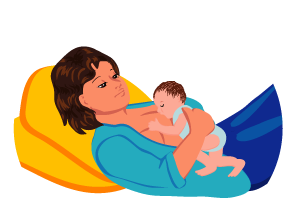

Кам’яна грудь. Що робити?
Автор: Вікторія Нестерова IBCLC
Переклад з російської: Тетяна Криницька–Яремків
Ця стаття для мам, які зіткнулися з переповненням грудей в перші дні, коли молозиво замінюється на молоко (переважно це 3-4 доба після пологів, але може бути і трішки раніше або пізніше). Також описані техніки можуть бути корисними і при набряку грудей на першу-другу добу (ще на етапі молозива).
Отже, прибуло молоко. Грудь наповнилась, стала не просто важкою, а дуже щільною і болючою. Навіть температура інколи піднімається на день. Інколи це реально лякає. А якщо і дитині важко її захопити, то що робити і чого не робити? Що потрібно знати в першу чергу?
Поїхали.
- Читаймо уважно: це тимчасово. Через 1-2 дні молочні залози прийдуть в «робочий» режим, розберуться з новими умовами роботи, відчуття важкості та переповнення минуть. У Вас не будуть такі груди весь період годування. Важливо ці півтори-дві доби Вам з дитиною добре попрацювати, допомагаючи молочним залозам, і все налагодиться.
-
Що робити зараз? Найголовніше правило: не дозволяти грудям «відпочивати». Вони повинні працювати. Віддавати молоко. Тоді відчуття нормалізуються швидше.
Приклад неправильної тактики – коли починає наповнюватися грудь, зробити перерву в годуванні до ранку – а раптом розсмокчеться якось само. Приклад правильної – почати прикладати дитину частіше, будити її, якщо вона спить надто довго. Звернути увагу на правильне прикладання.
- Про “будити”. Починає прибувати молоко, з’являються нові відчуття – переходимо в режим «годування за потребою мами». Ви маєте повне право розбудити дитину і попросити її Вам допомогти, якщо грудь уже «кличе». Це теж тимчасово.
- Тримати шлях для молока вільним.
а. Існують різні варіанти прибуття молока: якщо все добре, грудь може стати гарячою, важкою, навіть з якимись ущільненнями, але при цьому ареола залишається еластичною, дитина може якісно присмоктатись (захоплює сосок і ареолу), молоко вільно витікає. Після годування така грудь стає відчутно м’якшою і легшою. В такому випадку нічого спеціально не потрібно робити, просто прикладати-прикладати-прикладати. Все нормалізується дуже швидко.
б. Але в деяких випадках, і про них і розповідають різні історії, виходить, що до наповнення грудей приєднується набряк грудей та ареоли.

- Груди здаються кам’яними, дуже болючими, ареола нееластична, переповнена.
- Натискання на ареолу теж болюче (інколи навіть дуже! І цей біль заважає годувати дитину)
- Сосок сплющується.
- Молоко не витікає – заважає набряк, який перекриває йому шлях.
- Дитині може бути важко захопити таку грудь, вона сповзає з твердої ареоли (як з кульки) на сосок або взагалі не може присмоктатись.
- Годування часто не дає полегшення через те, що молоко не витікає.
- Зцідити теж не дуже виходить.
Ця ситуація називається нагрубанням. Тут грудям і дитині потрібна додаткова допомога, про яку ми і поговоримо. Головне згадати, що це не кінець світу і все налагодиться.
Всередині груди з нагрубанням і без відрізняються рівнем набряку (схема, просто для наочності):

Алгоритм дій для профілактики нагрубання:
Часте прикладання дитини (або зціджування, якщо з якоїсь причини дитина не може смоктати грудь сама) з перших днів ще на етапі молозива. В правильному положенні! В різних (по можливості) і зручних для мами (це обов’язково) позах.
Питний режим – нормальний, коли відчувається спрага. Дослідження показали, що обмеження пиття не допомагає в профілактиці нагрубання. Нічого, крім зневоднення мами, ми не отримаємо. Що робити з грудьми, якщо нагрубання вже сталось?
Відкрити шлях для молока.
Незамінний і дуже ефективний спосіб – техніка пом’якшення ареоли тиском по Джин Коттерман. Мінімум 1 хвилину, якщо нагрубання сильне – і 2-3 хвилини.

Що при цьому відбувається: пальці легко і безболісно відсувають зайвий набряк всередину. На деякий час ареола знову стає м’якою і еластичною, сосок більш вираженим, але головне – звільняється шлях для молока – протоки. Дитина може присмоктатись і отримати молоко.

Цей метод – це ключ до безболісного «розрулювання» ситуації з кам’яною/дуже болючою від переповнення груддю. Те, як мнуть інколи в пологових будинках, – це варварство, тому що силове розминання набряклої, переповненої залози – не тільки дуже болюча, але ще й беззмістовна процедура – адже при цьому шлях для молока перекритий!
Ареола набрякла. Протоки перетиснуті… «Кам’яну» грудь можна привести в робочий стан ось таким набагато ефективнішим, м’яким, безболісним способом.
Для більшого ефекту робим пом’якшення тиском так:
Вкладаємося на спину. Під лопатки – подушку – щоб грудь опинилася ще вище.
Руку з боку груді, з якою плануємо працювати, відкидаємо вбік.
Декілька разів ребром долоні м’яко погладжуємо грудь від соска в напрямку до підключичних лімфовузлів – до ключиці, і до підпахвинних – до підпахвинної ділянки. Рухи – ніби розганяємо воду. Мета – трішки попередньо «розігнати» набряк. Це він спричиняє біль і робить грудь кам’яною, а не власне молоко. Після цього - власне пом’якшення тиском - ставимо пальці навколо ареоли і тримаємо «ромашку». Мінімум одну хвилину, довше, якщо потрібно. Ви відчуєте, як ареола стає м’якшою, пальці наче провалюються глибше.

Чекаєте…. Чекаєте… Пам’ятайте – мінімум хвилину (по годиннику!), якщо потрібно – довше. …Ваша мета - ареола, еластична, як губа або мочка вуха. Може почати витікати молоко – але тримаємо і чекаємо далі.
Для додаткового ефекту можна після пом’якшення тиском додатково підцідити ділянку навколо ареоли руками.

Зціджування ділянки навколо ареоли:
Пальці стоять ближче до соска, а не на межі темної і світлої шкіри. Ваше завдання – ще трішки пом`якшити ареолу. Витече трохи молока, ареола стане ще м’якшою.
Ареола зовсім м’яка і безболісна при зціджуванні? Все, можна прикладати дитину (або зціджувати, якщо дитина поки що не смокче). Тепер молоко буде витікати і смоктання буде ефективним. Грудь буде пом’якшуватися далі.
Прикладання в положенні, коли дитина зверху на мамі (мама напівсидячи), до речі, добрий варіант, щоб далі прибрати набряк. А у дитини так ефективніше працюють її рефлекси.

М’яко погладжуйте (або просто покладіть на них пальці) болючі ділянки груді під час годування. Рухи не повинні витягувати сосок із рота дитини. Це допоможе швидше спорожнити дольки.
Не можна силою м’яти всю грудь! Історії про «розціджування» дуже вражають, але коли закритий шлях для молока (через набряк ареоли), це не тільки боляче, але й безглуздо. Пам’ятайте: якщо пом’якшити ареолу, звільнивши протоки від стискання набряком, молоко потече і нагрубання можна і реально буде прибрати практично безболісно.
Для зменшення набряку в проміжках між годуваннями до грудей можна прикладати холод - прохолодний, вимитий милом листок капусти – до в’янення, або пакет із льодом або замороженими овочами – обов’язково загорнутий в рушник! – на 15-20 хвилин. Це не «простудить» грудь, але дуже добре допоможе зняти набряк.
Повторюйте підготовку ареоли, поки в цьому є потреба. Закладіть собі трішки більше часу до початку годування.
Не забувайте, що грудь не повинна відпочивати!
Якщо дитина їла-їла, заснула і в неї вже явно не вміщається, а грудь ще повна і некомфортна, можна додатково собі допомогти - піти в душ (теплий, комфортний) і трішки підцідити грудь, стоячи під потоком води. Хай вода тече по спині, по комірцевій зоні. Так молоко легше витікає. Інколи в душі достатньо просто м’яко помасажувати грудь, нахилитись, і молоко потече саме. Підціджуємо не до кінця, а до полегшення, тільки щоб зняти дискомфорт – для цього достатньо, щоб витекло біля чайної ложки молока. Стало легше, витираємось, одягаємось, відпочиваємо, знову прикладаємо дитину. Підціджування не замінюють прикладання.
Якщо дитина дуже в’яла, сонна, втрачає вагу – можливо, є потреба зібрати зціджене молоко і дати дитині з ложки або шприца без голки. Дивіться по обставинах.
Корисне відео: масаж груді при нагрубанні і зціджування від прекрасного консультанта Майї Больман IBCLC